Game Instructions (hide) Hints (hide)
Choose in the selection box the "Letters" you want to play or learn.
Ten characters will appear each in Devanāgarī and phonetic spelling
Click on a character on one side and the related character on the other one.
If you don't find it in the visible list, you can use the paging by clicking on the right or left arrows.
Hint: If you don't know a character, you can mark it and click on "Hint".
The translation will be visible for 3 seconds.
Have fun with playing and learning!
Vowels
| Short | + connected | Long | + connected | |
| Real Vowels | ||||
| Gutterale<br />(kaṇṭhya) | 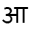 | 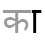 | ||
| Palatale<br />(tālavya) | 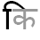 | |||
| Labiale<br />(oṣṭhya) | 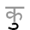 | 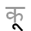 | ||
| Sonants | ||||
| Retroflexe<br />(mūrdhanya) | ||||
| Dentale<br />(dantya) | 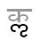 | 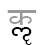 | ||
| Diphtonge | ||||
| Increment of I | ||||
| Increment of U | 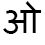 | 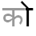 | 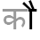 | |
| Anusvāra | Visarga | Virāma |
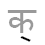 |
Consonants
| Plosive voiceless | + aspirated | Plosive voiced | + aspirated | Nasale | |
| Gutterale<br />(kaṇṭhya) | |||||
| Palatale<br />(tālavya) | |||||
| Retroflexe<br />(mūrdhanya) | |||||
| Dentale<br />(dantya) | 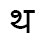 | ||||
| Labiale<br />(oṣṭhya) |
| Gutterale<br />(kaṇṭhya) | Palatale<br />(tālavya) | Retroflexe<br />(mūrdhanya) | Dentale<br />(dantya) | Labiale<br />(oṣṭhya) | |
| Semivokale<br />(antastha) | -- | ||||
| Frikative<br />(ūṣma) | -- | -- | |||
| Halante<br />(saṃghaśrī) | -- | -- | -- | -- |
Numbers
Ligatures: Examples and Irregulars
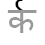 | ||||